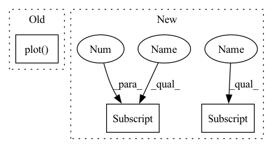

Pattern ID :31234
Before Change
for info in kwargs.get("per_timestep", []):
ic = info.get("one_step_backprojection_overapprox", None)
if ic is None: continue
rect = ic.plot( self.partitioner.animate_axes, self.partitioner.input_dims, self.estimated_one_step_backprojection_set_color, zorder=self.estimated_one_step_backprojection_set_zorder, linewidth=self.partitioner.linewidth, plot_2d=self.partitioner.plot_2d)
self.partitioner.default_patches += rect
// TODO: Visualize all the partitions
// self.partitioner.visualize(After Change
)
self.partitioner.animate_fig.tight_layout()
if "save_name" in info_list[0] and info_list[0] ["save_name"] is not None:
plt.savefig(info_list[0] ["save_name"])
if show:
plt.show()In pattern: SUPERPATTERN
Frequency: 3
Non-data size: 3
Instances Fragment ID: 91629638
Project Name: mit-acl/nn_robustness_analysis
Commit Name: 042a46d2012f8c1862cfedb24d600fbbad1ac007
Time: 2022-03-09
Author: nrober1122@gmail.com
File Name: nn_closed_loop/nn_closed_loop/analyzers/ClosedLoopBackwardAnalyzer.py
M Class Name: ClosedLoopBackwardAnalyzer
N Class Name: ClosedLoopBackwardAnalyzer
M Method Name: visualize(11)
N Method Name: visualize(10)
M Parent Class: analyzers.Analyzer
N Parent Class: analyzers.Analyzer
M File Name: nn_closed_loop/nn_closed_loop/analyzers/ClosedLoopBackwardAnalyzer.py
N File Name: nn_closed_loop/nn_closed_loop/analyzers/ClosedLoopBackwardAnalyzer.py
M Start Line: 98
M End Line: 172
N Start Line: 83
N End Line: 125
Before Change
plt.show()
timeseries = self.compute_ws()
time = np.linspace(0, self.n_steps * self.dt, self.n_steps)
plt.plot( time.T, timeseries.T)
plt.xlabel("Time")
plt.ylabel("Neuronal activity")
plt.ylim([0, 1])
plt.show()After Change
axes[0].set_title(f"{self.spikes_transform.spikes_layer_type.__name__}: Raster plot $t_0$")
axes[1].plot(self.t_space_ms, timeseries)
axes[1].set_title("Wilson-Cowan Time series")
axes[1] .set_xlabel("Time [ms]")
axes[1].set_ylabel("Neuronal activity [-]")
axes[1] .set_ylim([0, 1])
if show:
plt.show()
Fragment ID: 91629622
Project Name: neurotorch/neurotorch
Commit Name: 6212a789c98d8f2102983964329d9058339d5272
Time: 2022-08-02
Author: 50332514+JeremieGince@users.noreply.github.com
File Name: applications/fit_wilson_cowan_with_lif/dataset.py
M Class Name: WilsonCowanTimeSeries
N Class Name: WilsonCowanTimeSeries
M Method Name: plot_timeseries(4)
N Method Name: plot_timeseries(2)
M Parent Class: Dataset
N Parent Class: Dataset
M File Name: applications/fit_wilson_cowan_with_lif/dataset.py
N File Name: applications/fit_wilson_cowan_with_lif/dataset.py
M Start Line: 80
M End Line: 94
N Start Line: 81
N End Line: 99
Before Change
// Plot all our input constraints (i.e., our backprojection set estimates)
for ic in input_constraints[1:]:
rect = ic.plot( self.partitioner.animate_axes, self.partitioner.input_dims, self.estimated_backprojection_set_color, zorder=self.estimated_backprojection_set_zorder, linewidth=self.partitioner.linewidth, plot_2d=self.partitioner.plot_2d)
self.partitioner.default_patches += rect
// Show the target set
self.plot_target_set(After Change
)
self.partitioner.animate_fig.tight_layout()
if "save_name" in info_list[0] and info_list[0]["save_name"] is not None:
plt.savefig(info_list[0] ["save_name"])
if show:
plt.show() Fragment ID: 91629639
Project Name: mit-acl/nn_robustness_analysis
Commit Name: 042a46d2012f8c1862cfedb24d600fbbad1ac007
Time: 2022-03-09
Author: nrober1122@gmail.com
File Name: nn_closed_loop/nn_closed_loop/analyzers/ClosedLoopBackwardAnalyzer.py
M Class Name: ClosedLoopBackwardAnalyzer
N Class Name: ClosedLoopBackwardAnalyzer
M Method Name: visualize(11)
N Method Name: visualize(10)
M Parent Class: analyzers.Analyzer
N Parent Class: analyzers.Analyzer
M File Name: nn_closed_loop/nn_closed_loop/analyzers/ClosedLoopBackwardAnalyzer.py
N File Name: nn_closed_loop/nn_closed_loop/analyzers/ClosedLoopBackwardAnalyzer.py
M Start Line: 98
M End Line: 172
N Start Line: 83
N End Line: 125
Before Change
plt.plot(ty, y, c="k")
plt.plot(tx[:see], y[:see])
plt.plot( tx[see : see + pred], yhat[see : see + pred])
plt.ylim(-2, 2)
plt.show()
After Change
)
fig = plt.figure(figsize=(8.0, 8.0))
grid = ImageGrid(
fig=fig,
rect=111,
nrows_ncols=(8, 8),
axes_pad=0.05,
share_all=True,
label_mode="1",
)
grid[0] .get_yaxis().set_ticks([])
grid[0] .get_xaxis().set_ticks([])
// horizon = net.forecast_steps
horizon = 128 Fragment ID: 91629626
Project Name: cheind/autoregressive
Commit Name: 320dbcc72842b652d319f9fcdec663d2073d285c
Time: 2021-10-18
Author: cheind@profactor.at
File Name: autoregressive/model.py
M Class Name: AnonimousClass
N Class Name: AnonimousClass
M Method Name: eval(1)
N Method Name: eval(1)
M Parent Class:
N Parent Class:
M File Name: autoregressive/model.py
N File Name: autoregressive/model.py
M Start Line: 147
M End Line: 203
N Start Line: 199
N End Line: 246